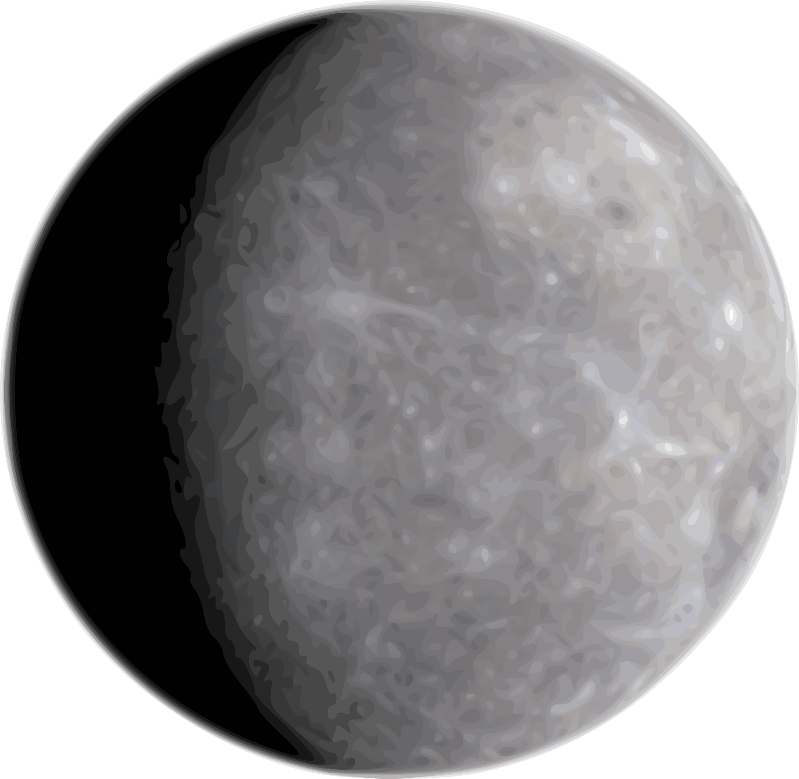
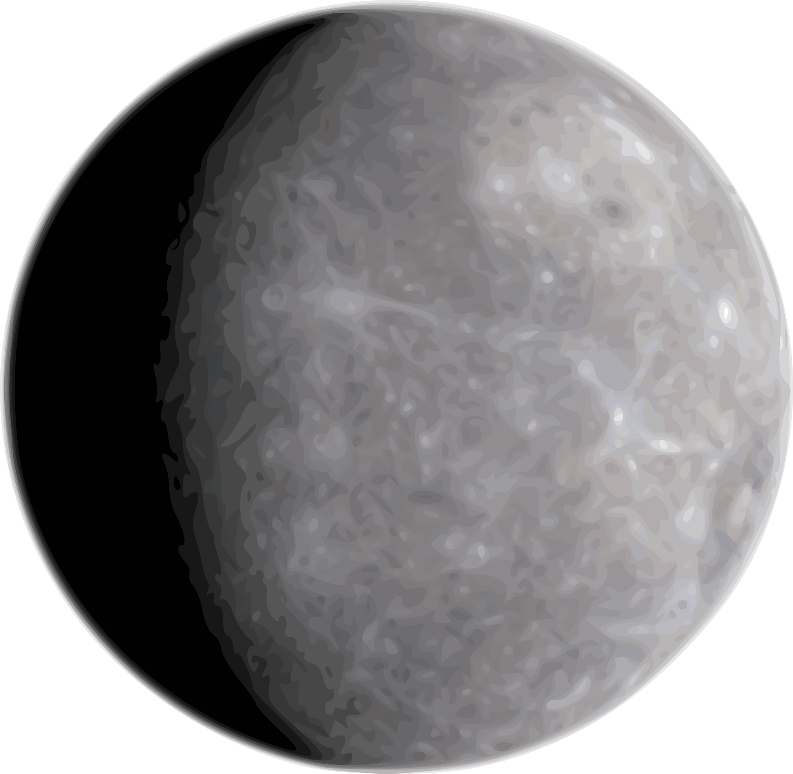

The largest planet of the Solar System. It is the oldest planet of the Solar System thus it was the first to take shape out of the remains of the solar nebula.It is the biggest planet of the Solar System, with a mean radius of 69.911 km, a diameter at the equator of about 142.984 km, and at the poles, the diameter is only 133.708 km. Jupiter has been dethroned as the moon king by Saturn, which now has 82 moons. Jupiter currently has only 79 known satellites.It has a very strong magnetosphere, almost 20 times stronger than Earth’s magnetic field and 20.000 times larger.Wind speeds of 360 km/h are common in the zonal jets.
The cloud layer is only about 50 km / 31 mi deep.Jupiter varies from -145 degrees Celsius / -234 degrees.Jupiter was the king of the moons since recently, having a total of 79 known satellites. Recently, Saturn dethroned Jupiter having a total of 82 known satellites. These rankings can change as observations continue.Jupiter shrinks 2 cm every year because it radiates too much heath.